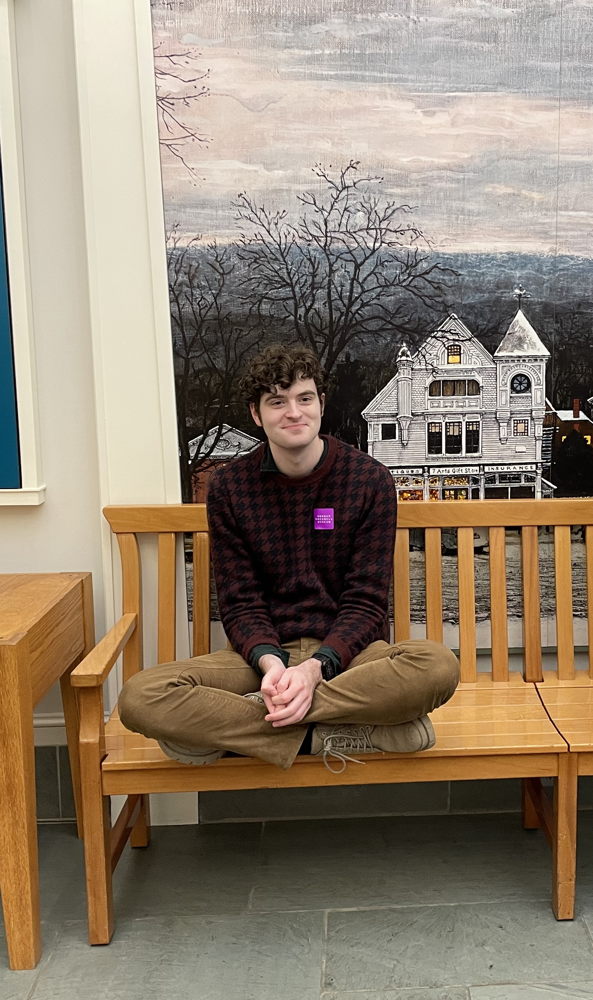
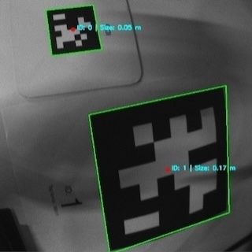
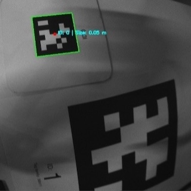
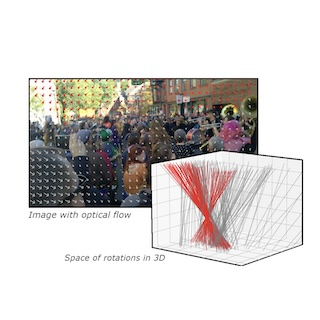
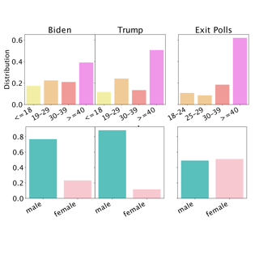

|
Stephen Scarano I'm a Computer Vision / Machine Learning Specialist and Researcher at Noblis Autonomy Lab in Reston, VA, where I create and evaluate perception pipelines for autonomous systems. I've worked on event cameras for space-based situational awareness (more on this soon), fast and robust optical-flow-based egomotion estimation, vision-language inference over Twitter data for representative social polling signals, and evaluation of ML-based intersection systems for road user detection and tracking (TBP June 2026). I did my B.S and M.S at the University of Massachusetts, Amherst, where my tuition and research was funded by the Bay State Fellowship. |
 |
{kind=link}
ResearchI'm interested in computer vision, deep learning, and autonomous systems. Most of my research highlights that less is more: rather than scale up existing frameworks for marginal gains, I hope to participate in research using novel data pipelines (event cameras, sensor fusion) and leveraging latent data structure (robust optical flow, vision-informed poststratified polling) to produce exceptional real-world outcomes for autonomous systems and robotics. Some papers are highlighted. |

|
Intersection Safety Systems: Classification and Prediction Across Different Road Users and Conditions
Stephen Scarano, Anand Seshadri ASCE ICTD, Upcoming 2026 Evaluating detection, classification, localization, and path prediction performance of ML-based intersection systems across lighting, occlusion, and turning conditions for different road users and sensor combinations. |
|


|
Multi-Tag Visual Localization and Gripper-Based Autonomous Package Retrieval
Arav Singh, Tony Gurney,, Mohammad Goli, Stephen Scarano, TBD, Upcominng 2026 We produce an modular drone system for multi-tag detection, localization, and extraction of a labeled package. |
|

|
Robust Frame-to-Frame Camera Rotation Estimation in Crowded Scenes
Fabien Delattre, David Dirnfeld, Phat Nguyen, Stephen Scarano, Michael J. Jones, Pedro Miraldo, Erik Learned-Miller ICCV, 2023 project page / arXiv By leveraging a novel generalization of the Hough Transform on optical flow vectors, we present an approach to estimating camera rotation in crowded, real-world scenes from handheld monocular video that outcompetes the SOTA on speed and accuracy. |
|

|
🏆 Election Polls on Social Media: Prevalence, Biases, and Voter Fraud Beliefs
Stephen Scarano, Vijayalakshmi Vasudevan, Mattia Samory, Kai-Cheng Yang, JungHwan Yang Przemyslaw A. Grabowicz ICWSM (Best Paper Finalist), 2025 Project Page / arXiv Leveraging vision-language inference over Twitter profiles, we correct social poll respondent biases on Twitter (now X) and produce useful social polling signals of the 2020 U.S Presidental Election. This work won the Best Paper Finalist Award at ICWSM and our has gone on to outcompete mainstream polling averages for the 2024 U.S Presidential Election prediction. |
Miscellanea |
|
Feel free to steal this website's source code. Do not scrape the HTML from this page itself, as it includes analytics tags that you do not want on your own website — use the github code instead. Also, consider using Leonid Keselman's Jekyll fork of this page. |